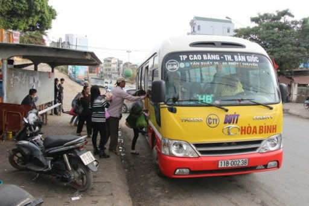
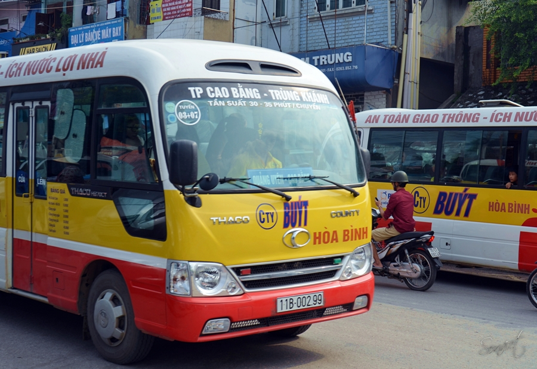
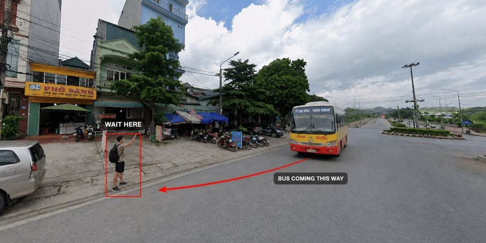
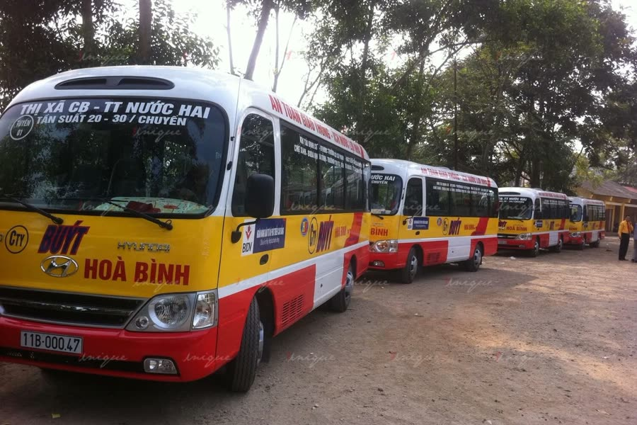
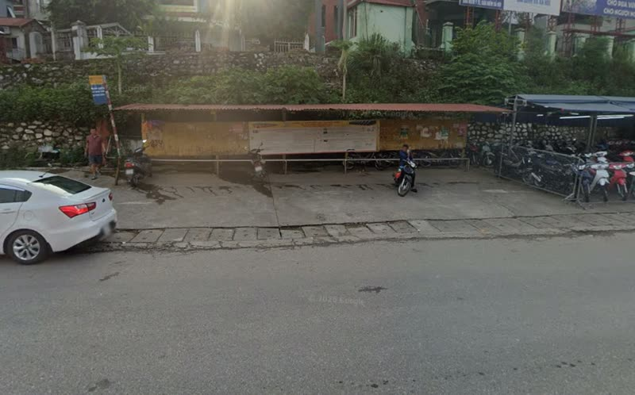
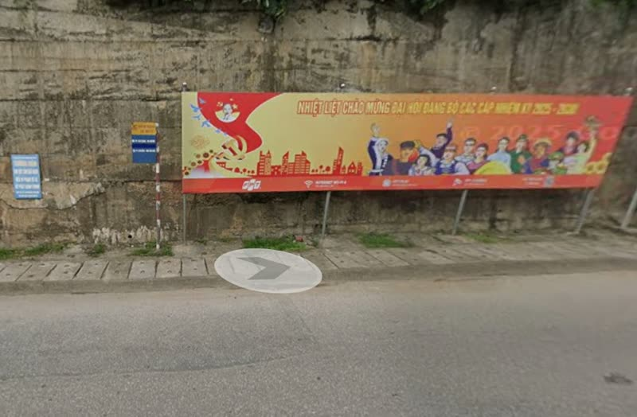
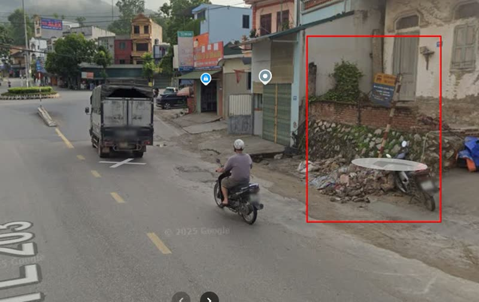

How to catch the bus
No bus stop needed. Wave the bus anywhere on its road.
- Find the road the bus runs on. See the bus map below.
- Go to that road. Wait on the side going your way. Not sure? See bus stop reference.
- See bus 03? It is yellow and red. Wave your arm.
- Pay on the bus: , cash only.
Too far from bus 03? Check the bus 02 map. Near that road? Take bus 02 to Ngoc Xuan roundabout and change to bus 03. Want to save time? Take a taxi to Ngoc Xuan roundabout or a bus stop. Any point on the bus 03 road is fine. Just stand on the side going your way.
Go early. Do not trust the bus times. Go to the road now and wait. A bus comes every 30–40 minutes.
Leave the city before 12:00. After that you may miss the last bus back.


Where the bus runs
Tap below to see where you are on the map.
Open the map in Google MapsKey place: Ngoc Xuan roundabout. Bus 03 and bus 02 meet here. On bus 02? Change to bus 03 here. Road hard to reach? Take a taxi here and wait. Open in Google Maps
Bus 03 goes to the falls. Stand on the side where cars go towards the falls.
Hospital to Ngoc Xuan roundabout: buses 03 and 02 use the same road. Take 03.
Far from bus 03? Take bus 02 to Ngoc Xuan roundabout. Change to bus 03 there.


Bus stop reference
Look for a sign like these. Wait next to it.



Bus times
The bus starts at these times. The bus will reach your stop later.
Bus 03: from the hospital (city to the falls)
Bus 03: from the falls (back to the city)
Bus 02 times
From the hospital
From Soc Giang
Getting back
The bus goes back to Cao Bang on the same road. Just wait on the other side of the road. At the falls, wait at the car park at the main gate.
Last bus: . Be at the car park by .
Show this on the bus
Tap a line to make it big. Show it to the bus staff.
Questions
The bus did not stop
Wave your hand early to signal the driver. The next bus comes in 30–40 minutes.
Is this my bus?
Look for 03. The sign may say “Bản Giốc” or “Trùng Khánh”. Show the driver this question: “Does this bus go to Ban Gioc?”
Can I get off anywhere?
Yes. Show “Please stop here” before your place.
Do I buy a ticket first?
No. Pay on the bus. Bring small notes.
Is the waterfall ticket included?
No. Buy it at the falls gate.
I missed the last bus
Take a motorbike taxi or a car. Agree the price first.
From other travellers
Share your tripA note from Luong
Dear traveller,
I am a receptionist in Cao Bang. Travel here is not always easy, and not everyone can rent a motorbike. Some people have no licence. Some do not feel safe on mountain roads. Some have a small budget.
You should still be able to see Ban Gioc Waterfall. The local bus is cheap and goes to the gate. It is only hard at first: there are no bus stops, and the signs are in Vietnamese.
So I made this page for you. It is free, and I sell nothing here.
Have a good trip.
Luong